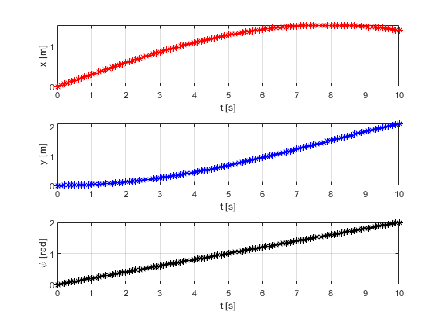
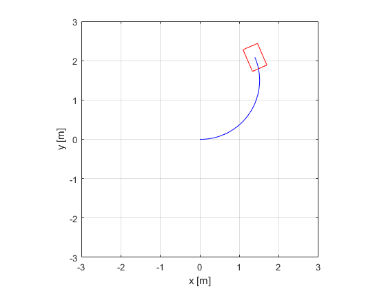

Contents
Inertia Frame vs Body Frame
clear
close all
clc
Sim. Param.
dt = 0.1;
ts = 10;
tspan = 0:dt:ts;
Initial Conditions
x0 = 0;
y0 = 0;
psi0 = 0;
eta0 = [x0;y0;psi0];
eta(:,1) = eta0;
loop starts
for i = 1:size(tspan,2)-1
psi = eta(3,i);
J_psi = [cos(psi), -sin(psi), 0;
sin(psi), cos(psi), 0;
0,0,1];
u = 0.3;
v = 0;
r = 0.2;
zeta(:,i) = [u;v;r];
eta_dot(:,i) = J_psi * zeta(:,i);
eta(:,i+1) = eta(:,i) + dt*eta_dot(:,i);
end
Motion graphics
figure(1)
subplot(3,1,1)
plot(tspan,eta(1,:),'*r')
xlabel('t [s]')
ylabel('x [m]')
grid on
subplot(3,1,2)
plot(tspan,eta(2,:),'*b')
xlabel('t [s]')
ylabel('y [m]')
grid on
subplot(3,1,3)
plot(tspan,eta(3,:),'*k')
xlabel('t [s]')
ylabel('\psi [rad]')
grid on

Animation
sf = 5;
l = 0.6;
w = 0.4;
car = [-l/2, l/2,l/2,-l/2,-l/2;
-w/2,-w/2,w/2, w/2,-w/2];
figure(2)
hcar=plot(0,0,'r');
hold on
htray = plot(0,0,'-b');
xlabel('x [m]')
ylabel('y [m]')
axis square
grid on
axis([-l*sf,l*sf,-l*sf,l*sf])
for i =1:size(tspan,2)-1
psi = eta(3,i);
New_Or = rot_z(psi)*car;
set(hcar,'xdata',New_Or(1,:)+eta(1,i), ...
'ydata',New_Or(2,:)+eta(2,i))
set(htray,'xdata',eta(1,1:i), ...
'ydata',eta(2,1:i))
pause(0.1)
end
